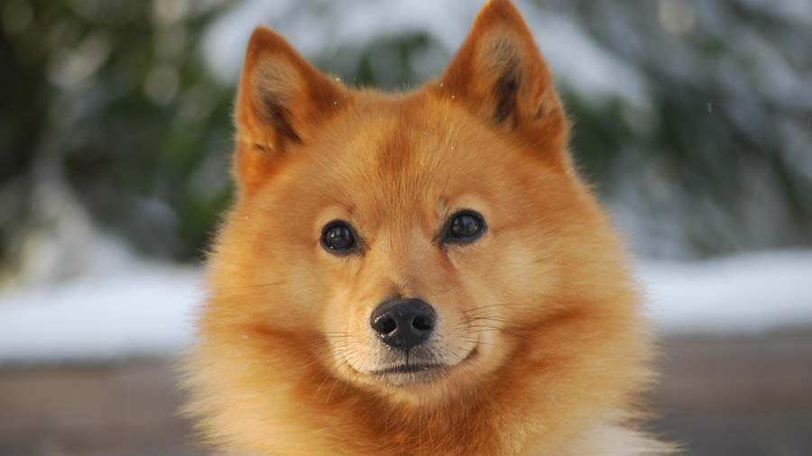
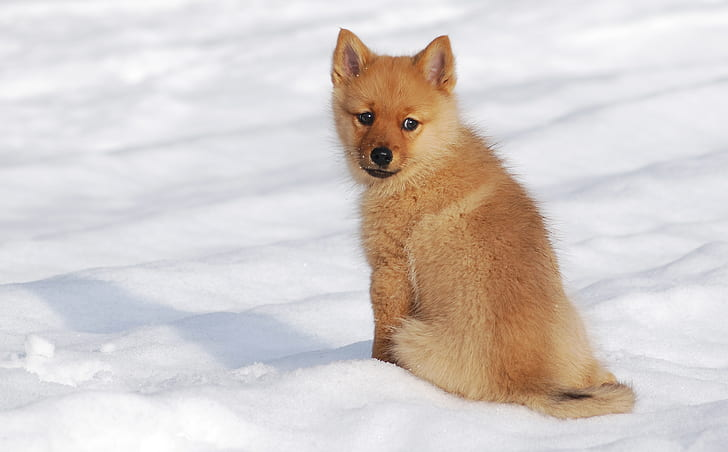
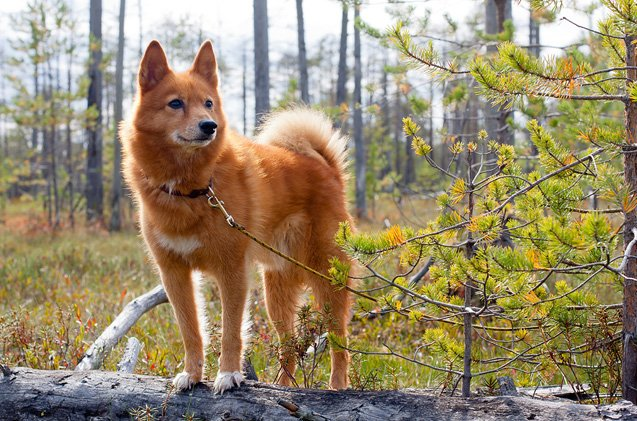
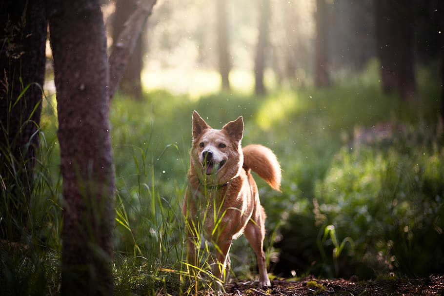

Finnish Spitz

origin
Finland
size
Medium
color
Others
type
Purebred
breed group
Non Sporting (AKC:1988), Northern Breeds (UKC)
character
Hypoallergenic
temperament
Happy
Independent
Intelligent, Loyal
height
15-20 inches (38-51 cm)
weight
31-35 pounds (14-16 kg)
geography
Europe
overview
The Finnish Spitz has a foxlike appearance, incorporating the typical traits of a Northern breed: small erect ears, dense double coat and curled tail. It is square-proportioned, and without exaggeration, quick and light on its feet. It has the conformation and temperament to hunt actively and tirelessly under the coldest of conditions. Its double coat, consisting of a short soft undercoat and harsh straight outer coat about 1 to 2 inches long, provides insulation from the snow and cold, allowing it to hunt tirelessly under the coldest of conditions.
history
The Finnish Spitz dogs were originally known as the Suomenpystrykorva (the Finnish Cock-Eared Dog) and the Finnish Barking Birddogs. About 2000 years ago they were brought from the Volga River area of central Russia to what is now Finland, and are considered the National dog of Finland, and are mentioned in several patriotic songs. They were used to hunt small game.
When the dog would find their pray they would alert the hunter with their distinctive yodel type, ringing bark, pointing with their head in the direction the animal was in. The breed is more popular in Scandinavian countries and less popular in the USA, most likely due to their reputation of using their bark to alert their masters. The Finnish Spitz makes a good bird dog. It was first recognized by the AKC in 1988.
Photo Gallery


